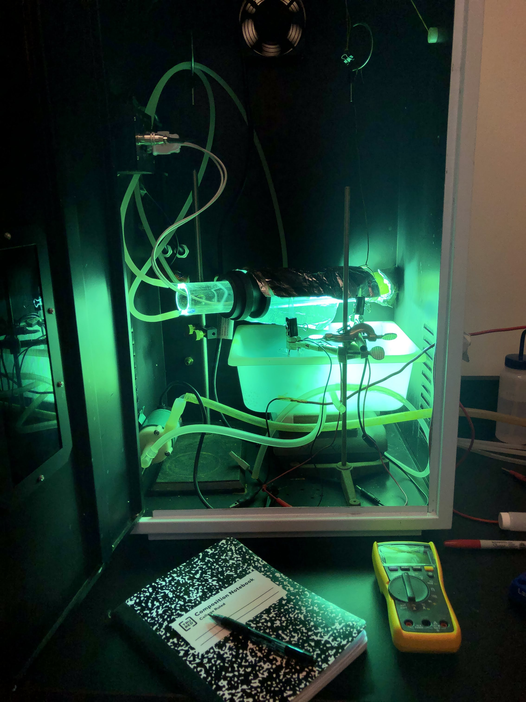
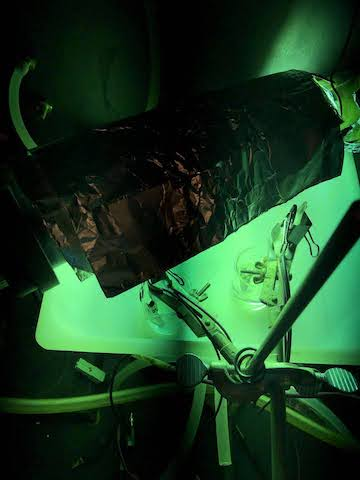

Experiment Details
Updated June 11, 2022


Materials
- 100mL DI water
- 1mL 100ppm PFO stock solution
- 0.670g Na2SO4
- 2 Magnetic stirrers
- Silicon carbide disc
- Titanium oxide disc
- 2 Stainless steel discs
- 2 Plastic tubes
- 2 Buret clamps
- 4 Alligator clips and wires
- Mercury lamp cabinet
- 14 vials
- Precision pipette
- 14mL M8PFOs
- Stopwatch
- 2 Containers (reaction chamber)
- Aluminum foil
- Multimeter
Procedure
- Pour 50 mL DI water in each reaction chamber
- Remove 0.5 mL DI water from each chamber and add 0.5 mL of 100ppm PFO stock solution.
- Add 0.335g Na2SO4 to each solution
- Stir PFO solutions with magnetic stirrer.
- Wrap top of SiC and TiO2 anodes with aluminum foil and clip foil with alligator clip.
- Attach the wire to different buret clamps by squeezing it against the plastic tube.
- Clip alligator clip to top of stainless steel cathodes and attach the wire to each buret clamp.
- Fill vial with 50uL M8PFOs before adding 50uL test solution. Stir solution.
- Submerge anodes and cathodes into solution about halfway.
- Turn on mercury lamp. Wear protective eyewear such as sunglasses.
- Use the multimeter to take the potential difference of both solutions.
- Repeat taking the samples every hour for 7 hours.